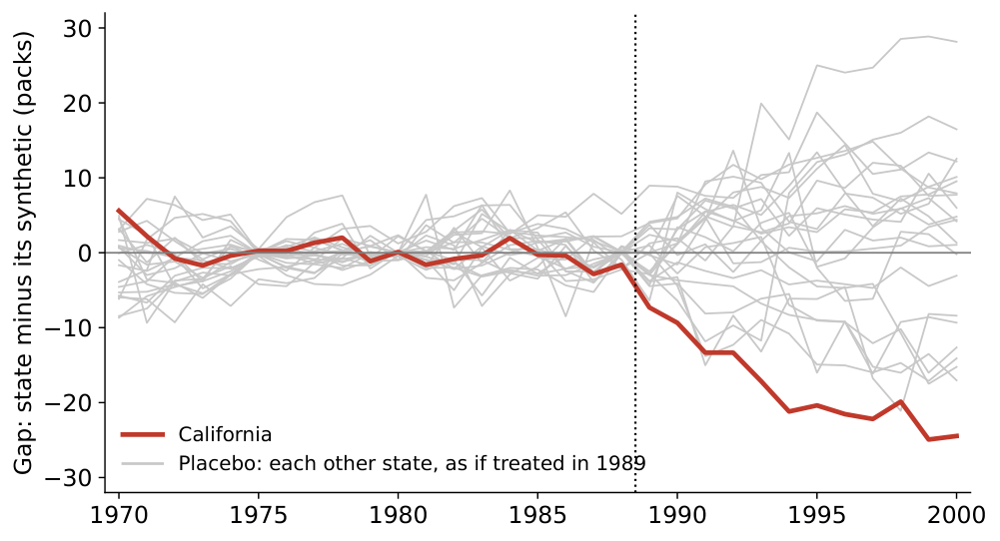
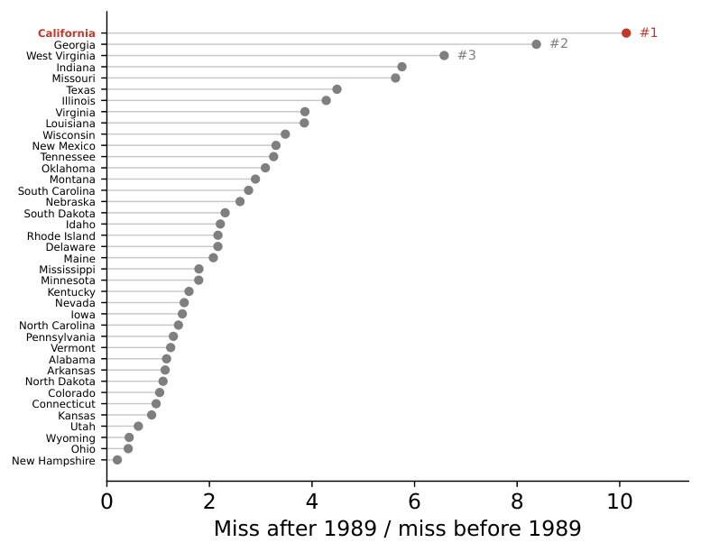
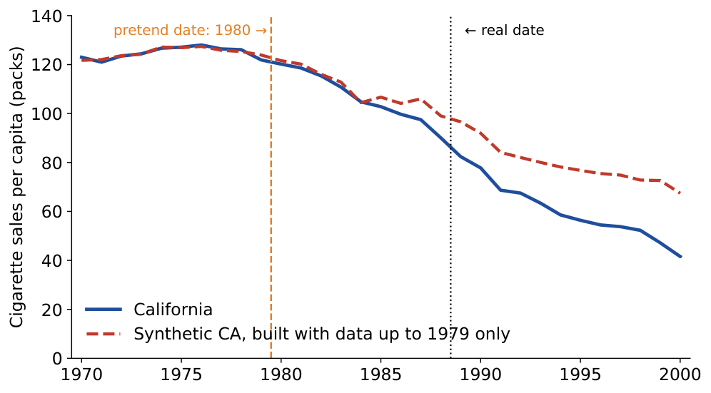
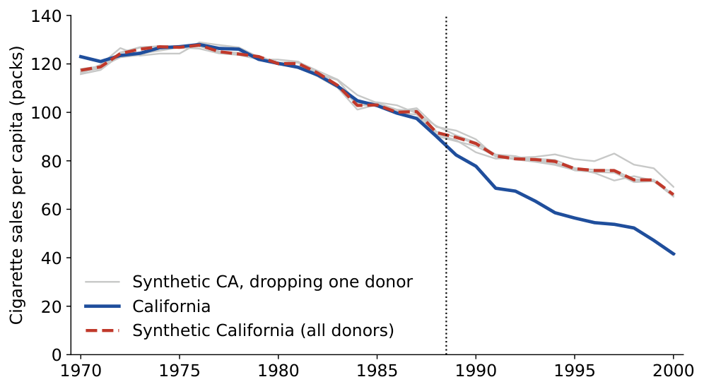

What each method assumes about the missing potential outcome, why it works, how to test it, and whose effect it estimates
Notation as in the module on potential outcomes: \(Y_{1i}, Y_{0i}\), treatment \(D_i\). New: \(Y^{N}_{1t}\) and \(Y^{I}_{1t}\) (synthetic control), and potential treatments \(D_{1i}, D_{0i}\) (IV).
Synthetic control: the setup in potential outcomes; the estimator as a weighted average of donors; why the weights are non-negative and sum to one; why matching a long pre-period helps; placebo inference. IV: potential treatments and the four compliance types; the four assumptions; the logic of the LATE theorem (the reduced form is the share of compliers times their effect); LATE vs. ATT and ATE; counting compliers. Not: the factor-model bias bounds or Abadie's kappa.
| Fixed effects / DiD | Lagged outcomes (unconfoundedness) | |
|---|---|---|
| Assumes | \(E[Y_{0it} \mid \alpha_i, X_{it}, D_{it}] = E[Y_{0it} \mid \alpha_i, X_{it}]\) | \(E[Y_{0it} \mid Y_{i,t-h}, X_{it}, D_{it}] = E[Y_{0it} \mid Y_{i,t-h}, X_{it}]\) |
| Selection story | treated units differ in a permanent unobserved level \(\alpha_i\) | units were selected on their past outcomes (a bad year, a crisis) |
| Fails when | selection follows a transitory dip | a persistent unobserved difference remains |
Two predictors, eight donors. Non-negative weights summing to one can only reach points inside the shaded convex hull of the donors: the synthetic is the closest point in it. Drag the orange point (the treated unit).
| Donor state | Weight (live session) | Weight (ADH 2010) |
|---|---|---|
| Utah | 0.371 | 0.334 |
| Nevada | 0.246 | 0.234 |
| Colorado | 0.241 | 0.164 |
| Montana | 0.073 | 0.199 |
| Connecticut | 0.068 | 0.069 |
| Other 33 states | 0 | 0 |
| Before 1989 | California | Synthetic | Average of 38 |
|---|---|---|---|
| Log income per capita | 10.08 | 9.88 | 9.83 |
| Retail price (cents) | 89.4 | 89.4 | 87.3 |
| Beer per capita | 24.3 | 23.6 | 23.7 |
| Packs per capita, 1975 | 127.1 | 126.8 | 136.9 |
| Packs per capita, 1980 | 120.2 | 120.1 | 138.1 |
| Packs per capita, 1988 | 90.1 | 91.7 | 113.8 |
Synthetic control is not derived from a model, but Abadie, Diamond & Hainmueller justify it with an "as-if" model for the untreated outcome:
\[ Y^{N}_{it} = \delta_t + \lambda_t\, \mu_i + \varepsilon_{it} \]| Noise vs. pre-period length | Bias from overfitting shrinks as the pre-period grows relative to the noise in the outcome. Aggregates (states, countries) help; long pre-periods help, unless the world changed along the way. |
| Interpolation | A good average can hide bad ingredients: the synthetic matches \(\mathbf X_1\) on average while each donor is far from unit 1. Restrict the donor pool to units that are similar to begin with. |
| Donor pool size | More donors make a close fit easier and overfitting easier too. Leave out units hit by similar shocks or policies (Prop 99 drops states that passed their own programs). |
| Fit quality | A poor pre-period fit is a warning: the method does not extrapolate, so it cannot fix it. |
Synthetic control is more "algorithmic" than "model-based" (Arkhangelsky & Imbens): a strength, because it needs no functional form, and a limitation, because its assumptions are less explicit.
| No anticipation | \(Y_{1t} = Y^{N}_{1t}\) for \(t \le T_0\): the pre-period really is untreated. If people reacted to the announcement, move \(T_0\) earlier. |
| No interference | Donors' observed outcomes are their \(Y^{N}_{jt}\). If California's tax pushed smokers to buy in Nevada, Nevada's sales rise and the effect is overstated. |
| No other shock to unit 1 alone at \(T_0\) | Another California-only policy starting in 1989 would be credited to Prop 99. Shocks shared with donors are fine. |
| The synthetic keeps tracking | A synthetic that matched unit 1 before \(T_0\) would have kept matching it: the factor model's job, helped by a long pre-period and similar donors. |
| A good fit is possible | Unit 1 lies (close to) inside the donors' convex hull. If not, no weights will fix it. |




This version matches only the 1970–88 outcomes, and each placebo state gets its own best fit. The gap (about −19.5 packs) is close to the published one, but California ranks third of 39, behind Missouri and Virginia: p ≈ 0.08 instead of 0.026, as in the live session's sensitivity check. The placebo loop takes several seconds.
Every unit is one of four types, by its pair \((D_{0i}, D_{1i})\):
| \(D_{0i} = 0\) | \(D_{0i} = 1\) | |
|---|---|---|
| \(D_{1i} = 0\) | never-taker | defier |
| \(D_{1i} = 1\) | complier | always-taker |
Draft: compliers served because they were drafted; always-takers volunteered; never-takers were exempt (health, school).
What we actually see in each cell of the data:
| \(Z_i = 0\) | \(Z_i = 1\) | |
|---|---|---|
| \(D_i = 0\) | compliers + never-takers | never-takers |
| \(D_i = 1\) | always-takers | compliers + always-takers |
Types are like potential outcomes: fixed, but never observed. With no defiers (crossed out), two cells contain a single type.
| Assumption | Formally | In words, for a coupon offered at random |
|---|---|---|
| 1. Independence | \(\{Y_i(d,z)\}_{d,z},\, D_{1i}, D_{0i} \perp\!\!\!\perp Z_i\) | the offer is as good as random (a lottery) |
| 2. Exclusion | \(Y_i(d, 0) = Y_i(d, 1)\) for \(d = 0, 1\) | the offer affects purchases only through using the coupon, not as an ad |
| 3. First stage | \(E[D_{1i} - D_{0i}] \neq 0\) | the offer changes who uses a coupon |
| 4. Monotonicity | \(D_{1i} \ge D_{0i}\) for all \(i\) (no defiers) | nobody stops using coupons because they were offered one |
With exclusion, the outcome depends only on the treatment: \(Y_{1i} \equiv Y_i(1, \cdot)\), \(Y_{0i} \equiv Y_i(0, \cdot)\), and \(Y_i = Y_{0i} + (Y_{1i} - Y_{0i})D_i\) as before.
| Source | Examples | Independence | Worry most about |
|---|---|---|---|
| Randomized offers ("encouragement") | a coupon, an email, a wellness program offered at random | by design | exclusion: does the offer itself act like an ad? |
| Lotteries | the draft, charter-school and housing-voucher lotteries | by design | exclusion: did winners change other choices? |
| Random assignment to deciders | loan officers, judges, patent examiners with different leniency | if assignment is random | monotonicity: an officer lenient on one kind of case and strict on another |
| Geography and costs | distance to a college, a store, a hospital | doubtful: location tracks income | independence and exclusion |
| Shocks | weather; whose team plays in the Super Bowl | plausible | exclusion: the shock changes other things too |
1. Split the reduced form by type. With exclusion, \(Y_i(D_{1i},1) - Y_i(D_{0i},0) = (D_{1i} - D_{0i})(Y_{1i} - Y_{0i})\). So
\[ \text{ITT} = \pi_a \cdot 0 + \pi_n \cdot 0 + \pi_c\, E[Y_{1i} - Y_{0i} \mid \text{complier}] - \pi_d\, E[Y_{1i} - Y_{0i} \mid \text{defier}] \]Always-takers and never-takers do the same thing whatever \(Z\) says, so (by exclusion) their outcomes don't move.
2. Monotonicity removes the defiers (\(\pi_d = 0\)), whose effects would otherwise enter with a minus sign:
\[ \text{ITT} = \pi_c \, E[Y_{1i} - Y_{0i} \mid \text{complier}] \]3. Divide by the first stage, which is \(\pi_c\):
\[ \frac{E[Y_i \mid Z_i = 1] - E[Y_i \mid Z_i = 0]}{E[D_i \mid Z_i = 1] - E[D_i \mid Z_i = 0]} = E[Y_{1i} - Y_{0i} \mid D_{1i} > D_{0i}] \equiv \text{LATE} \]The Wald ratio is the local average treatment effect: the average effect for compliers (Imbens & Angrist 1994).
Expected values for a large population with the instrument assigned 50/50. Effects can differ by type.
| White men born 1950 | Reduced form: earnings, eligible − not | First stage: served, eligible − not | LATE |
|---|---|---|---|
| Earnings in 1981 | −$435.8 | 0.159 | −$2,741 |
| Earnings in 1971 | −$325.9 | 0.159 | −$2,050 |
Angrist (1990), "Lifetime Earnings and the Vietnam Era Draft Lottery," American Economic Review.
With independence and no defiers, the shares are identified from two treatment rates:
\[ \pi_a = E[D_i \mid Z_i = 0], \qquad \pi_c = E[D_i \mid Z_i = 1] - E[D_i \mid Z_i = 0], \qquad \pi_n = 1 - E[D_i \mid Z_i = 1] \]Bloom et al. (1997), Journal of Human Resources; data as distributed with Mostly Harmless Econometrics.
| Compliers, \(E[Y_{0i}]\) | Never-takers, \(E[Y_{0i}]\) | Compliers, \(E[Y_{1i}]\) | Always-takers, \(E[Y_{1i}]\) | |
|---|---|---|---|---|
| JTPA: 30-month earnings | $18,371 | $18,118 | $20,541 | $17,285 (34 people) |
| Wellness: gym visits a year | 7.5 | 3.8 | 7.4 | none |
Your turn: repeat for men and women separately (d["sex"]: 1 = male). Is the LATE the same?
Synthetic California by hand with placebos; JTPA compliance types, LATE, and complier means; the wellness program's compliers vs. never-takers; a latent-index simulation.
In Colab: File → Save a copy in Drive to keep your own version.
Abadie (2021), "Using Synthetic Controls," Journal of Economic Literature; Angrist & Pischke, Mastering 'Metrics ch. 3 and Mostly Harmless Econometrics §4.4; Imbens & Angrist (1994), Econometrica; Arkhangelsky & Imbens (2024), "Causal Models for Longitudinal and Panel Data: A Survey."
Thanks to Paul Ellickson, whose lecture notes on synthetic controls and on instrumental variables are the backbone of this module, and to Eric Zou, Elena Prager, and Avery Haviv for sharing their teaching materials.